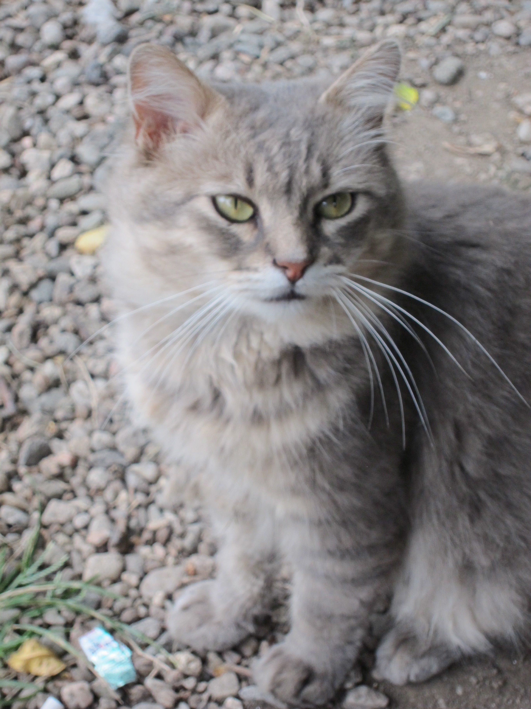

My first post
Hi! Welcome to my blog.
Through out the last five years I've been carrying a variety of
small,
large, old, new, digital and analogical cameras around.
Too weight-averse and sometimes too space-constrained
to carry big equipment with,
most of my shots are quick snaps of color,
characteristic of the place I was at.
Enjoy!

by @micaelafinn